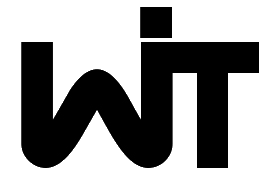
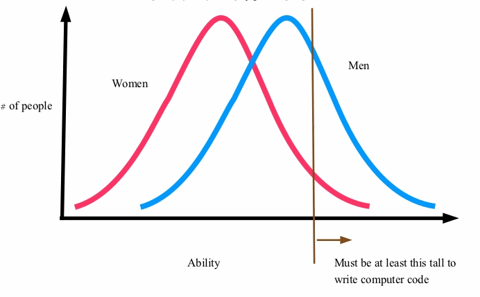
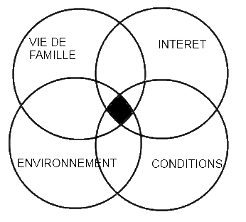

Une fille dans mon équipe?

Women In Technology
Constat

Proportions de femmes dans l'IT (en occident)
Constat - bis

Proportions de femmes dans les équipes de dev
Tendance
Elle ne va pas en s'améliorant...
Nombre d'étudiants diplomés de l'option informatique dans cinq écoles d'ingénieur françaises de 1980 à 2010
Mais pourquoi est-ce qu'elles ne viennent pas ?
C'est comme ça. Les femmes sont moins attirées par les sciences. On n'y peut rien

Sauf que ...
Si ce n'est pas inné, c'est peut-être de l'acquis alors ?...
Stéréotypes liés au genre
Stéréotypes liés à la méconnaissance des métiers de l'IT
Stéréotypes liés à la première approche
Dans ce cas-là, on peut sûrement changer quelque chose !
Oui !
Et celles qui sont déjà là, pourquoi est-ce qu'elles ne restent pas ?
Le taux de femme quittant les métiers de l'IT est deux fois supérieur à celui des hommes
Pourquoi partent-elles ?
- 30% : Mauvaises conditions de travail (salaire, horaires, évolutions de carrière)
- 27% : Conditions de travail incompatibles avec la vie de famille
- 22% : Interêt du travail
- 17% : Environnement de travail déplaisant
Que faire ?
Faire attention à celles qui sont là ^^
Nos actions
- Retours d'expérience
- Échanges sur la position des femmes dans les métiers de l'IT
- Promotion de la technique auprès des plus jeunes
D'autres idées ?
nantes-witnantes-wit.fr
 @WITNantes
@WITNantes